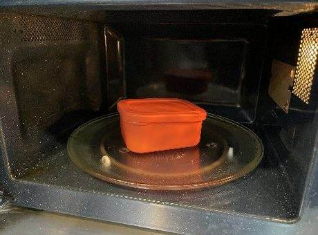
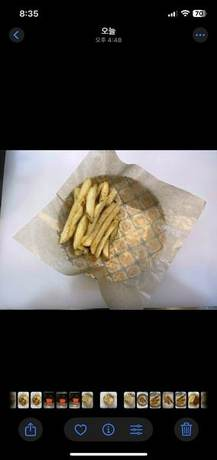
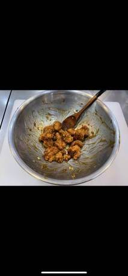
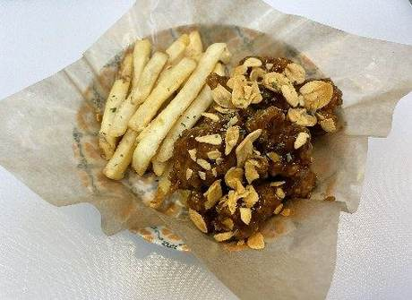

| 메뉴명 | 오리지널 간장마늘 치킨 |
|---|---|
| 판매가격 | 9,900원 |
| 원재료 | 순살치킨, 감자튀김, 간장마늘치킨소스, 파슬리, 튀김마늘 |
| 사용 부자재 | 덮밥접시 |
| 메뉴특징 | 달짝지근한 간장소스와 알싸한 마늘 풍미까지 한국인 입맛에 딱! |
조리방법
1
180도 튀김기에 포션한 순살치킨 1봉(250g)을 넣고 1분간 먼저 튀긴다.
180도 튀김기에 포션한 순살치킨 1봉(250g)을 넣고 1분간 먼저 튀긴다.

2
포션한 감자튀김 2봉(160g)을 튀김기에 넣어 4분간 함께 튀겨낸다.
포션한 감자튀김 2봉(160g)을 튀김기에 넣어 4분간 함께 튀겨낸다.
3
순살치킨, 감자튀김을 함께 건져내어 기름을 털어준다.
순살치킨, 감자튀김을 함께 건져내어 기름을 털어준다.

4
전자레인지 용기에 간장마늘 치킨소스 110g을 계량하여 넣고 1분간 돌린다.
전자레인지 용기에 간장마늘 치킨소스 110g을 계량하여 넣고 1분간 돌린다.

5
접시에 유산지 1장을 깔고 한쪽에 감자튀김을 먼저 담는다.
접시에 유산지 1장을 깔고 한쪽에 감자튀김을 먼저 담는다.

6
믹싱볼에 튀긴치킨과 간장마늘소스를 넣고 골고루 버무린다.
믹싱볼에 튀긴치킨과 간장마늘소스를 넣고 골고루 버무린다.
7
남은 공간에 소스에 버무린 치킨을 담아준다.
남은 공간에 소스에 버무린 치킨을 담아준다.

8
치킨 위에 튀김마늘 8g,
파슬리를 뿌려 완성한다.
(※ 포크, 냅킨 함께 제공)
치킨 위에 튀김마늘 8g,
파슬리를 뿌려 완성한다.
(※ 포크, 냅킨 함께 제공)
※ 튀김시간
순살치킨 5분/ 감자튀김 4분
※ 한번에 많은 양을 튀길 경우, 30초~1분 정도 시간 늘려 튀기기!
(튀김온도 180도 꼭 체크할 것)